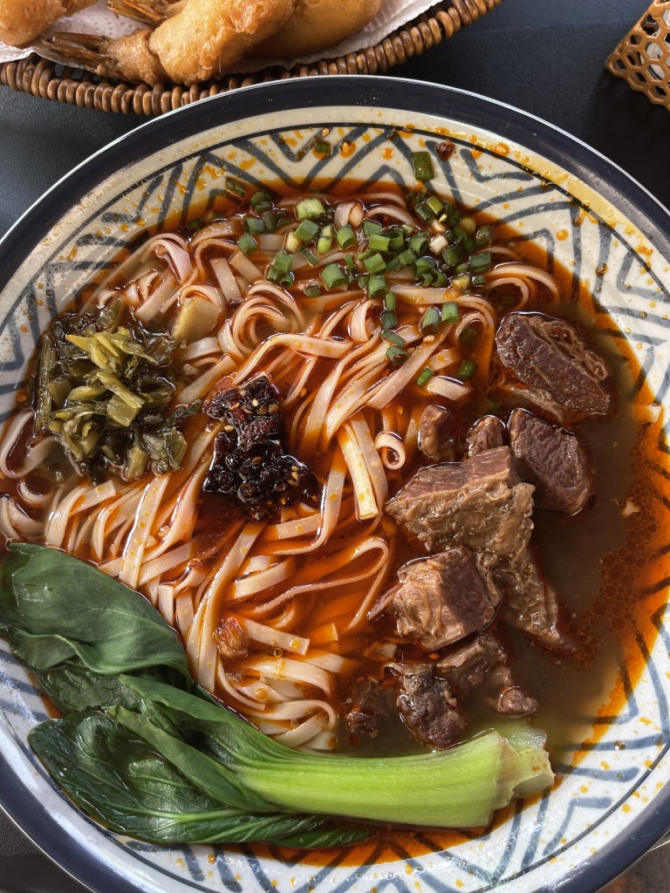
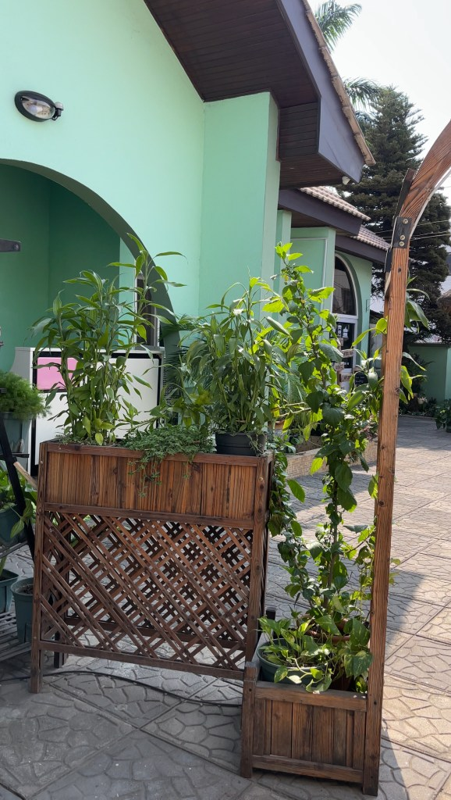
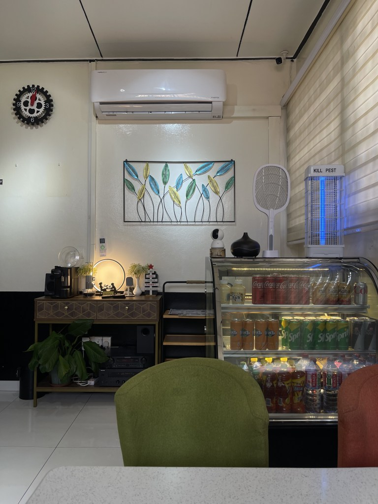

EAST LEGON, ACCRA
A little garden.
A lot of flavour.
Noodles, dumplings and a place to slow down.


Bamboo Street, AccraDaily · 12 pm–10 pmDine-in · Kerbside pickup · Delivery

MAKE YOURSELF AT HOME
A table.
A bowl.
A little time.
Take a seat indoors or settle into the green outdoor space. From a bowl of noodles to dumplings for the table, find something to make a meal of.
More from the garden on InstagramVISIT US
Your table
in East Legon.
A little off the everyday. Easy to find.
Come by
Monday–Sunday
12:00 pm–10:00 pm
Listed hours. Please call to confirm holiday opening times.